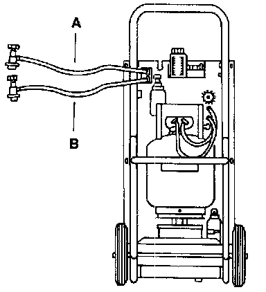

Discharging System
WARNING:- Always use an Underwriter's Laboratory (UL) approved refrigerant recovery/recycling/recharging unit such as Kent-Moore (ACR)4, or equivalent, whenever discharging an R-134a A/C system.
- Any person who services a motor vehicle air conditioner MUST, by law, be properly trained and certified and use approved refrigerant recycling equipment. Technicians must complete an EPA approved recycling course to be certified.
- State and local governments may have additional requirements regarding air conditioning servicing. Always comply with state and local laws.
- Always wear safety goggles when charging or discharging system.
CAUTION:
- Always use separate refrigerant recovery/recycling! recharging servicing equipment for R-12 and R-134a systems. DO NOT use one piece of equipment for both R-12 and R-134a systems. The residual traces of refrigerant inside the equipment will contaminate and damage the equipment. Servicing equipment includes recovery/recycling/recharging unit, charging station, vacuum pump, manifold gauges, etc.
- DO NOT use R-12 servicing equipment on R-134a systems or R-134a equipment on R-12 systems or damage to both the vehicle A/C system and servicing equipment may result. Use only equipment designed to meet Society of Automotive Engineers (SAE) standards.
- R-134a and R-12 systems use different size service fittings. NEVER use adaptors to convert an R-12 fitting to R-134a size or R-134a fitting to R-12 size.
NOTE: Refer to Safety Precautions prior to discharging or charging A/C refrigerant system. [1][2]Service Precautions
NOTE: Make sure that initial set-up of the refrigerant recovery/recycling/recharging unit has been completed before discharging the A/C system.

- Connect red high-pressure hose -A- of refrigerant recovery/ recycling/recharging unit to high side fitting on vehicle and open coupler valve.
- Connect blue low-pressure hose -B- of refrigerant recovery/ recycling/recharging unit to low side fitting on vehicle and open coupler valve.
CAUTION: Always follow manufacturer's instructions when using a refrigerant recovery/recycling/recharging unit.
- Following refrigerant recovery/recycling/recharging unit manufacturer's instructions, discharge A/C system into refrigerant recovery/recycling/recharging unit.
- Disconnect power supply from A/C clutch to prevent accidental compressor operation with A/C system discharged